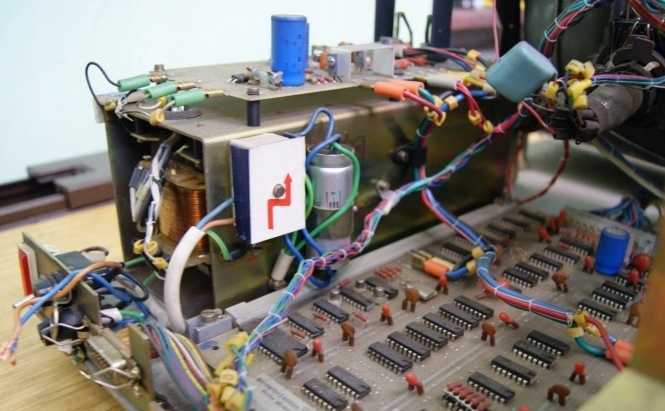
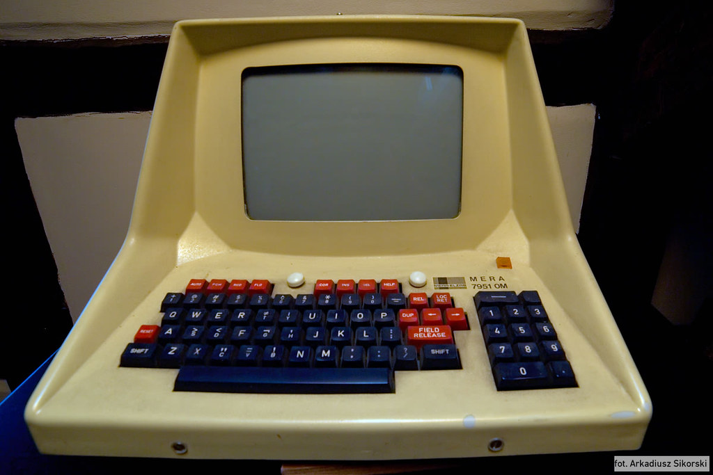

Működés:
Front-end funkciónak készült a rendszer.
Tipikus adatkezelési funkciók:
Egyedi karakterek, illetve adatmezők bevitelének ellenőrzése, javítása, módosítása adatok ellenőrzése kimenet előtt nagygépes igények szerinti előfeldolgozása az anyagoknak önálló számítógépként is lehetett használni a fő munkaállomást. A monitorok csak 32 sor, 40 chpl felbontásban működtek szöveges módban.
Általános programok
Konkrét adatok híján csak feltételezni lehet, hogy a funkciók végrehajtásához létezniük kellet hatékony szövegszerkesztő programoknak
További tudni valók:
A terminálokat mind helyi, mind táv-adatátviteli hálózatokon keresztül lehetett a központi géphez kapcsolni.
A KEY TO DISC rendszerek családjába tartozik. Közvetlenül a mágnesszalagra viszi az adatokat.
A MERA egy önálló miniszámítógép ként is működött, az előnye hogy a mágneslemezre rögzített ellenőrizni és javítani lehetett és utána közvetlenül fel lehetett dolgozni a nagy számítógépen is.



|
|
| Megjelenés | 1987 |
| Processzor | Nincs |
| Memória | 1000 szó |
| Kijelző | Internal CRT |
Készítette:
Oravecz Attila
Forrás:
Neumann János Számítógép-tudományi Társaság Informatikatörténeti Fórum